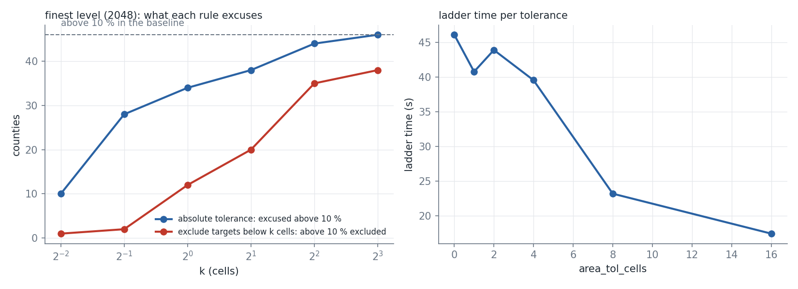

area_tol_cells is an early-stopping option, not an accuracy option: users who accept a small absolute size for small regions let the convergence test pass earlier. On the county ladder the finest level ends CONVERGED from 4 finest-grid cells, after 15 iterations and with a less accurate result than the stalled run (mean 1.28 % against 0.94 %, 103 counties above 10 % against 46); at 1 to 2 cells it only reports (34 and 59 counties unresolved). Excluding regions with a target below k cells does not converge the finest level up to 8 cells. Districts and states are unchanged. The option is off by default.
Outcome (2026-10-27). Merged as area_tol_cells (default 0, an early-stopping option for small regions), Cartogram.n_unresolved and a stall warning that names the continuation (PR 185). The measurement did not support a non-zero default.
measure.py <dir> runs the ladders with area_tol_cells (the library branch), analyze.py <dir> computes what each rule excuses on the baseline levels and draws the figure. measure_per_level.json is the first measurement, in which k counted cells of the grid of each level.
Counties above 10 % in the baseline: 762 (grid 512), 413 (1024), 46 (2048).
| k | grid 2048: abs. excused / still above | grid 2048: targets below k cells / of those above 10 % / still above after exclusion | grid 512: abs. excused / still above |
|---|---|---|---|
| 0.5 | 28 / 18 | 2 / 2 / 44 | 683 / 79 |
| 1 | 34 / 12 | 20 / 12 / 34 | 746 / 16 |
| 2 | 38 / 8 | 58 / 20 / 26 | 762 / 0 |
| 4 | 44 / 2 | 171 / 35 / 11 | 762 / 0 |
| 8 | 46 / 0 | 383 / 38 / 8 | 762 / 0 |
At the finest level the absolute tolerance needs 8 cells to excuse all 46 counties above 10 %, the exclusion of sub-cell targets never converges the level up to 8 cells (8 to 44 regions remain above tolerance). At the coarsest level (512) a tolerance of 2 cells of that grid excuses all 762 counties and the ladder would stop on a grid that is too coarse; hence the tolerance is the same area at every level (cells of the finest grid).
area_tol_cells = k cells of the finest grid| k | time | level (grid: status, iterations) | n_unresolved at the end | mean error | above 10 % |
|---|---|---|---|---|---|
| 0 | 46 s | 512: stalled 500, 1024: stalled 80, 2048: stalled 200 | 0 | 0.94 % | 46 |
| 1 | 41 s | same, same iterations | 34 | 0.94 % | 46 |
| 2 | 44 s | 512: stalled 620, 1024: stalled 70, 2048: stalled 140 | 59 | 1.20 % | 62 |
| 4 | 40 s | 512: stalled 580, 1024: stalled 130, 2048: converged 15 | 103 | 1.28 % | 103 |
| 8 | 23 s | 512: stalled 470, 1024: converged 63 | 228 | 3.11 % | 229 |
| 16 | 17 s | 512: stalled 350, 1024: converged 20 | 436 | 5.86 % | 436 |
Controls (area_tol_cells 4): districts converge after 135 iterations with a mean of 0.4625 % and a max of 8.26 %, states after 65 with 1.19 % and 5.65 %, both identical to the runs without the tolerance.
area_tol_cells is an early-stopping option: it ends the run once small regions are within k cells of their target, whatever their relative error, and the result is less accurate than the run that continues. It is not a fix for stalls; the continuation of a stalled run (stall_patience=None) gave the better counties (mean 0.68 %, 8 above 10 %) at 2.3 times the ladder time. The measurement shows the price of the early stop at each k, so the default stays off; n_unresolved reports the excused regions at any k.
Left: at the finest level (2048) of the baseline ladder, the counties above 10 % that an absolute tolerance of k cells excuses and that the exclusion of targets below k cells removes. Right: time of the ladder per area_tol_cells.